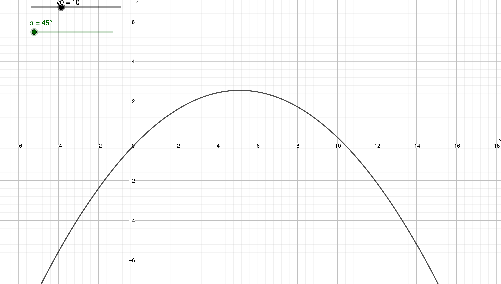

Balistique
1] Contexte
Une pierre a été retrouvée à l’intérieur de l’appartement de M. Gerard Manfin. La pierre a-t-elle pu être envoyée de l’extérieur ?
2] Étude physique (paramétrage) et mise en équation
L’appartement de M. Manfin se trouve au troisième étage de l’immeuble, à une hauteur de 9 m. Devant l’immeuble se trouve une haie de 1 m de haut, si bien qu’il n’est pas possible de s’approcher à moins de 1,50 m de l’immeuble.
-
Faire un schéma à l’échelle de la situation. On prendra pour cela un homme de taille moyenne de 1,7 m. On souhaite ensuite paramétrer le mouvement de la pierre, c’est-à-dire modifier les caractéristiques du mouvement. Pour cela, on ajoute un repère (appelé "référentiel" en physique) pour repérer la position (x ; y) de la pierre à chaque instant. On choisira comme origine O des axes l’endroit où le lancer lâche la pierre. On ajoutera un axe (Ox) horizontal et un axe (Oy) vertical.
-
Ajouter ce repère au schéma précédent.
-
Quels sont selon vous les paramètres qui vont influencer la trajectoire de la pierre ? On vérifiera ces hypothèses dans la partie mathématique. En utilisant les lois de la physique, on trouve l’expression des coordonnées (x, y) de la pierre en fonction du temps t :
et où g = 9,81 m.s2 est une constante, $v_0$ la vitesse initiale et α l’angle avec lequel a été lancé la pierre.
3] Étude mathématique de l’équation
Pour pouvoir tracer la trajectoire, il faut une expression où y est exprimée en fonction de x :
-
A l’aide de la première équation physique, exprimer t en fonction de x.
-
Remplacer t par l’expression trouvée, dans la seconde équation, pour obtenir :
L’équation obtenue est celle d’une fonction dite "trinôme du second degré". L’allure générale de ce type de courbe est une parabole, comme pour la fonction carré, mais à "l’envers".
-
Dessiner au crayon de papier l’allure de cette trajectoire sur votre schéma, placer l’angle α. Les questions suivantes servent à vérifier votre intuition.
-
Tracé sur GeoGebra
a. Créer une constante $g = 9,81 m.s^{-2}$ en entrant simplement cette égalité dans la ligne de saisie ;
b. Créer deux curseurs appelés $\alpha$ et $v_0$ correspondant respectivement à l’angle de lancer et la vitesse initiale fournie à la pierre. (largeur des curseurs : 400) ;
c. Entrer l’équation obtenue en 2 dans la ligne de saisie et régler le zoom pour n’afficher que la partie de la courbe qui est au-dessus de l’axe des abscisses.

-
Influence de l’angle initial
a. On fixe une vitesse initiale de 15 $ m.s^{-1}$. Tracer les trajectoires correspondant à des angles de lancer de 30°, 40°, 45°, 55°;b. L’angle initial a -t-il une influence sur la distance ?
c. On suppose la pierre lancée avec une vitesse initiale de 10 $m.s^{-1}$. Sous quel angle la lancer pour qu’elle aille le plus loin possible ? Le plus haut possible ?
-
Influence des autres paramètres
-
Comment déterminer l’influence de la vitesse initiale ?
-
D’après les équations, la masse a-t-elle une influence ?
-
D’après les équations, la force a-t-elle une influence ?
-
Des trajectoires particulières
-
Tracer les trajectoires correspondant à des angles de lancer de 30°et de 60°, avec une même vitesse initiale de 15 $m.s^{-1}$ ;
-
Que remarque-t-on ?
-
Et pour un angle de 20°? de 40°?
-
Monsieur Manfin habite au troisième étage, à 9 m de hauteur. Proposer à l’aide de GeoGebra des angles et vitesses initiales permettant d’envoyer la pierre à cette hauteur.
-
Un être humain moyen peut fournir une vitesse initiale maximale d’environ 12 m.s-1 (le record du monde étant de 14 m.s-1). Conclure quant à la plausibilité que la pierre ait été lancée de l’extérieur par la fenêtre.
-
Proposer des hypothèses sur la présence de la pierre retrouvées.